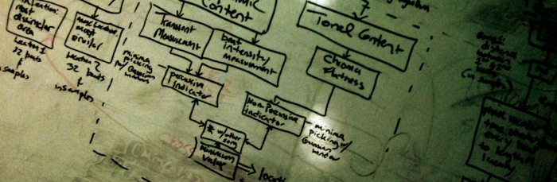

<hr>
    

<h2 style="margin-top:0px;"><span class="textbg2"><a class="worklist" href="projects/MO.php" >Guided Synthesis with Markov Oracle <span class="lowercase">Machine Improvisation, Python</span></a></span></h2>

<h2 style="margin-top:0px;"><span class="textbg2"><a class="worklist" href="projects/audioLDA.php" >Topic Modeling of Audio Signals with LDA <span class="lowercase">Unsupervised Learning, Matlab</span></a></span></h2>

<h2 style="margin-top:0px;"><span class="textbg2"><a class="worklist" href="projects/audioEFX.php" >Pd Externals/Audio Effects <span class="lowercase">Pd, C++, Audio Unit, JUCE</span></a></span></h2>

<h2 style="margin-top:0px;"><span class="textbg2"><a class="worklist" href="projects/Pilot.php" >Automatic Crossfades Point Finding between Songs <span class="lowercase">Heuristics, Matlab, music information retrieval</span></a></span></h2>

